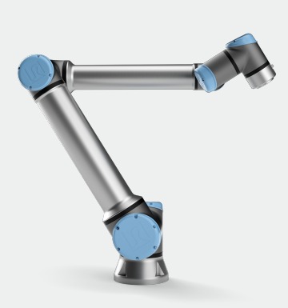

Real UR10e — spot-welding trajectory
Physical robot executing the trajectory mirrored from Isaac Sim.
Built an interface that synchronises a real UR10e robot with NVIDIA Isaac Sim and the ROS 2 ecosystem via Action Graphs and MoveIt — and validated the round-trip on a spot-welding trajectory.
Physical robot executing the trajectory mirrored from Isaac Sim.
Simulation side of the twin reflecting the real robot's state in real time.
